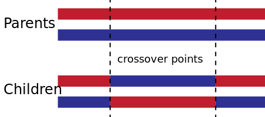

Genetic Algorithm#
import numpy as np
import random
import holoviews as hv
import panel as pn
from holoviews.streams import Stream
hv.extension('bokeh', logo=False)
What are we doing?#
How can you maximise the number of components in a laptop, while having size, weight and price constraints? For questions like these, we often want to reach for optimisation algorithms, and one particularly fun one is Genetic Algorithm.
Our example problem#
For the sake of a fun visualisation, let’s say the optimisation is “Wherever I click on the plot is the optimimum spot to find”. We’re going to use a population-based approach, Genetic Algorithm, in which there is a population of individuals (each individual representing a possible solution) which evolve across generations.
What we want to see#
We want to see a kind of “evolution simulator” in which we click a spot on the plot and when we begin evolving, each generation moves closer to the place we clicked.
We need a population#
“And God said, Let us make man in our image”. First, let’s create a population.
def create_population(population_size, vector_length):
return np.random.rand(population_size, vector_length)
population_size = 100
vector_length = 2
current_population = create_population(population_size, vector_length)
hv.Scatter(current_population)
Survival of the fittest#
We’re going to need to evolve individuals from our population, so we need some way to check which of the population is the fittest.
### Closer (smaller distance) is better
For the sake of this visualisation, we’re going to place a target on the plot and the “fitness” of a individual is how close they are to the target. We’re going to calculate the distance using the euclidean distance metric.
def mean_squared_error(y_true, y_pred):
return ((y_true - y_pred)**2).mean(axis=0)
target_x, target_y = 0,0
def problem(soln):
global target_x # using globals so we can link this to the click event later
global target_y
return mean_squared_error(soln, [target_x, target_y])
Then we need a way to check, who’s our fittest member of our community
def assess_fitness(individual, problem):
"Determines the fitness of an individual using the given problem"
return problem(individual)
def find_current_best(population, problem):
"""Evaluates a given population and returns the fittest individual.
This can be sped up to only loop over popuation once, but because this is a tutorial, 3 lines is nicer.
"""
fitnesses = [assess_fitness(x, problem) for x in population]
best_value = min(fitnesses) # Lowest is best
best_index = fitnesses.index(best_value)
return population[best_index]
aaaand Fight!#
Now, we’re going to let these potential solutions fight it out and only let a certain few have offspring. For this we will use “Tournament Selection” which is just grabbing a few individuals and having them compete to the death (the fittest survives!).
What’s nice about this is that you can keep a bit of diversity within the population and it’s not just the best that survive, some lucky unfit individuals might be matched up with worse folk, and so they’ll survive.
def tournament_select_with_replacement(population, tournament_size, problem):
"Competes a number of challengers and returns the fittest one"
challengers_indexes = np.random.choice(population.shape[0], tournament_size, replace=True)
challengers = population[challengers_indexes]
return find_current_best(challengers, problem)
Then once we have done this twice, those two individuals can “mate” and have children… to keep the population the same across generations for simplicity, they’ll have two children. We’ll use Two point Crossover, which is just splitting both parents in three parts and swapping the middle part to form two children.
def crossover(parent_a, parent_b):
"Performs two point crossover on two parents"
l = parent_a.shape[0]
c, d = random.randint(0, l), random.randint(0, l)
# Flip if c greater than d
if (c > d): d, c = c, d
if (c == d): d += 1
temp = np.copy(parent_a)
child_a = np.concatenate([parent_a[0:c], parent_b[c:d], parent_a[d:]])
child_b = np.concatenate([parent_b[0:c], temp[c:d], parent_b[d:]])
return child_a, child_b

Source: Wikipedia
Mutate!#
For extra variety across generations, we want to introduce a bit of chaos to the system to produce the Marie Curie of each generation (but also probably our least capable individuals too). This helps find new solutions outside our current population’s capability. So for each individual, there’s a chance that their offspring will mutate (determined by mutation_rate).
def mutate(child, mutation_rate, mutation_scale):
"May mutate a child using Gaussian convolution"
if mutation_rate >= random.uniform(0, 1):
size = child.shape[0]
mutation_value = np.random.normal(0, mutation_scale, size)
child = child + mutation_value
return child
Here’s the entirety of what happens to the population between generations. To recap: a bunch from the current population are selected at random to compete to reproduce. Two parents then produce two children using a mix of the two parents for both children. Finally, each child has a chance that they will mutate. One we’ve created a new population of the same size as the original population, we have completed one “generation”.
def update_population(current_population, problem, should_mutate, mutation_rate, mutation_scale):
"""Performs one generational update of Genetic Algorithm"""
pop_size = len(current_population)
next_population = np.empty((pop_size, 2))
tournament_size=2
for i in range(int(pop_size / 2)):
parent_a = tournament_select_with_replacement(current_population, tournament_size, problem)
parent_b = tournament_select_with_replacement(current_population, tournament_size, problem)
child_a, child_b = crossover(parent_a, parent_b)
next_population[i] = mutate(child_a, mutation_rate, mutation_scale) if should_mutate else child_a
position_child_b = i + (pop_size / 2)
next_population[int(position_child_b)] = mutate(child_b, mutation_rate, mutation_scale) if should_mutate else child_b
return next_population
A little class for saving the state of the evolution#
class GeneticAlgorithm(object):
def __init__(self, population_size, vector_length, problem):
self.problem = problem
self.current_population = create_population(population_size, vector_length)
self.current_best = find_current_best(self.current_population, self.problem)
def next_generation(self, mrate, mscale, should_mutate):
self.current_population = update_population(self.current_population, self.problem, should_mutate, mrate, mscale)
self.current_best = find_current_best(self.current_population, self.problem)
ga = GeneticAlgorithm(population_size, vector_length, problem)
Interact#
The sliders, tap streams, and buttons for our dashboard. run_button begins a periodic update of our evolution process when clicked. next_generation_button triggers just one generational update. new_pop_button triggers the creation of a new population. The rest are just sliders and markdown for the other bits and bobs. This is then positioned out using pn.Column, pn.Row and pn.Spacer from panel.
def tap_event(x,y):
global target_x
global target_y
if x is not None:
target_x, target_y = x,y
return hv.Points((x,y,1))
target_x, target_y = 10, -10
tap = hv.streams.SingleTap(transient=True, x=target_x, y=target_y)
tap_dmap = hv.DynamicMap(tap_event, streams=[tap]).opts(color='r', marker='^', size=10)
mutate_checkbox = pn.widgets.Checkbox(name='Mutate', value=True)
niters_slider = pn.widgets.IntSlider(name='Time Evolving (s)', start=0, end=50, value=5)
mutation_rate_slider = pn.widgets.FloatSlider(name='Mutation Rate', start=0.0, end=1.0, value=0.3)
mutation_scale_slider = pn.widgets.IntSlider(name='Mutation Scale', start=0, end=50, value=1)
new_pop_button = pn.widgets.Button(name='New Population', width=50)
def e(event):
population_size = 100
vector_length = 2
global ga
ga = GeneticAlgorithm(population_size, vector_length, problem)
hv.streams.Stream.trigger(dmap.streams)
new_pop_button.on_click(e)
next_generation_button = pn.widgets.Button(name='Next Generation', width=50)
def next_gen_event(event):
hv.streams.Stream.trigger(dmap.streams)
next_generation_button.on_click(next_gen_event)
def update():
ga.next_generation(mutation_rate_slider.value, mutation_scale_slider.value, mutate_checkbox.value)
return hv.Scatter(ga.current_population, label='Population').opts(color='b')*hv.Points((ga.current_best[0], ga.current_best[1],1), label='Current Fittest').opts(color='c', size=10)
dmap = hv.DynamicMap(update, streams=[Stream.define('Next')()])
run_button = pn.widgets.Button(name='\u25b6 Begin Evolving', width=50)
def b(event):
dmap.periodic(0.1, timeout=niters_slider.value, block=False) # Run the simulation for 60 seconds
run_button.on_click(b)
instructions = pn.pane.Markdown('''
# Genetic Algorithm Dashboard
## Instructions:
1. **Click on the plot to place the target.**
2. Click '\u25b6 Begin Evolution' button to begin evolving for the time on the Time Evolving slider.
3. Experiment with the Mutation Rate (the probability of an individual in the next generation mutating)
4. Experiment with the Mutation Scale (the size of the mutation, tip: zoom out using the Wheel Zoom on the right of the plot).
''')
dashboard = pn.Column(instructions, pn.Row((dmap*tap_dmap.relabel('Target')).opts(width=600, height=600),
pn.Column(pn.Row(run_button, pn.Spacer(width=50), new_pop_button), next_generation_button,
mutate_checkbox, niters_slider, mutation_rate_slider, mutation_scale_slider)))
dashboard.servable()